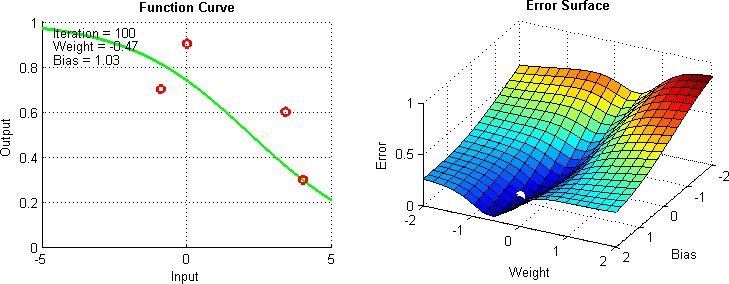

1. Basics
Before we talk about any machine learning, let's talk about the main tools that we are going to be using for this workshop in the bootcamp: NumPy and Pandas
Tools: NumPy and Pandas
Numpy
Numpy is a library that includes many tools for mathematical computations, including a computationally efficient ndarray (much faster than python lists)1 In addition, many mathematical functions useful in linear algebra are included in NumPy with the numpy.linalg functions. These functions will prove to be pretty useful in the rest of the workshop.
If you are familiar with using MATLAB from MATH18, then you should be pretty familiar with the functions that NumPy provides.
Pandas
Pandas is a library that includes data structures and data analysis tools for data munging and preparation. Pandas makes it relatively easy to interact and filter through data, with nice convenience functions for plotting and exporting data to SQL databases or CSV's.
Faq
I heard that python is a very slow language. If it's so slow, why do we use python for such intensive tasks such as Machine Learning and Data Analysis?
While it is true that Python in itself is a very slow language, most of the tools that we are using to implement ML algorithms don't use Python to do calculations. Libraries such as Numpy and Tensorflow respectively have C and C++ backends 2 3, allowing them to be very fast. You can even uses other libraries such as Intel MKL to have hardware optimized linear algebra operations in Numpy if you are especially a speed demon.
The Challenge
Say you are a data scientist working for an investment firm. A client wants to invest their money into california real estate, buying homes in a specific block to airbnb. However, none of the homes are for sale, and the people living inside the homes won't let you appraise their homes because they hate airbnb. How do you find an estimate of their home price using data available to you?

The Dataset
The dataset that you are given for this challenge is a dataset on California home prices. How can you use this data to predict home prices. Below is a description of the dataset and the features you are given to predict the median home value for a block.
| Column title | Description | Range* | Datatype |
|---|---|---|---|
| longitude | A measure of how far west a house is; a higher value is farther west |
|
float64 |
| latitude | A measure of how far north a house is; a higher value is farther north |
|
float64 |
| housingMedianAge | Median age of a house within a block; a lower number is a newer building |
|
float64 |
| totalRooms | Total number of rooms within a block |
|
float64 |
| totalBedrooms | Total number of bedrooms within a block |
|
float64 |
| population | Total number of people residing within a block |
|
float64 |
| households | Total number of households, a group of people residing within a home unit, for a block |
|
float64 |
| medianIncome | Median income for households within a block of houses (measured in tens of thousands of US Dollars) |
|
float64 |
| medianHouseValue | Median house value for households within a block (measured in US Dollars) |
|
float64 |
Info
Definition: Features
To clarify on the use of the word "features" above, features are essentially the traits of data that we use to train our machine learning model. For example, when making a model that can predict home prices, we can use all the data above to help predict the median house value for a block. The housingMedianAge, medianIncome, and all the other columns except for our predictor, medianHouseValue, are our features for our model.
Linear Regression:
What is Regression?
Regression is a powerful tool that can often be used for predicting and values from a dataset. This is often done by creating a line or function, where the evaluation of this function can be used to predict such values. For example, with the regression below, you can predict the value of skin cancer mortality from a variable, in this case state latitude.

Regression is Continuous, meaning that it is trying to predict continuous values from the variables, or features that your data has.
Definition
Linear Regression is the process of taking a line and fitting it to data. What we mean by "fitting" is that that we want to make a line that "approximates" the data (We'll get more into what we mean by this in a bit). The example above is with two dimensions (for example, if your dataset has 1 independent variable).
Essentially, we want to find the weights w for a linear equation such that we can predict the final value from input features. Here is an example of the type of equation we are trying to set up with m independent variables.
Note
Representing this equation in code is hard, so it is best to represent this equation in vector (array) notation
We can also put or weights and input in their vector representation,
And also our input in it's vector representation,
And our solution to the linear equation represented as the dot product
Keep in mind that each of these vectors have length m for the amount of features that we want our machine learning model to use
But, what exactly is an "optimal solution", and how do we get one? We'll get to how to find this solution, but let's set up our goal to find the most optimal approximate solution, otherwise known as setting up our objective function. We want to optimize the above equation so that it minimizes our objective function. In other words, we want to find the equation such that our loss is minimized. In fancy mathematical writing we want to minimize:
Gradient Descent
Let's say we want to find the minimize a function, for example x^2. We can easily find the minimum of this function (remember the second derivative rule in calculus?), but how can we do it for more complicated functions that are harder to differentiate like our objective function? This problem will get very hard, and very computationally intensive.
To get over this hurdle of finding the exact minimum, we can instead approximate the minimum, using an algorithm called Gradient Descent.
Imagine you have a ball and place it on a slope. It will move downwards, with the direction opposite of the gradient of the slope (remember the gradient is in the direction of ascent). We can think of gradient descent as something similar. Here we will move our current approximation of the minimum, towards the gradient. When the gradient gets small enough (in other words, when the slope is near zero at a minimum) or when we have moved our approximation for enough epochs, then we set the current approximation as our final value.

However, calculating the gradient of the cost function is a costly procedure, as it has to be done with each weight of your model. If we wanted to do this mathematically, we would have to calculate the equation below to find the derivative for each feature and each sample, which would kill any computer.
Instead of doing that, let's simply define the gradient as the difference between our predictions from the current iteration of gradient descent and the true values, multiplied by our sample features. This will get an approximation of the change over each feature the loss.
Here is psuedocode for Gradient Descent below, courtesy of CS231n:
Gradient Descent Pseudocode 4
1 2 3 4 5 | # Vanilla Gradient Descent while True: weights_grad = evaluate_gradient(loss_fun, data, weights) weights += - step_size * weights_grad # perform parameter update |
Stochastic Gradient Descent
However, gradient descent has a huge drawback: it is computationally ineffecient. For every epoch, the gradient is calculated over all training samples. This is costly, and is unfeasible for most datasets. We can improve this by using Stochastic Gradient Descent (SGD), a modification of the standard Gradient Descent algorithm.
Stochastic Gradient Descent tries to solve the previous problem by only calculating the gradient for a single randomly sampled point at a time, hence the word Stochastic. Thus, this allows to update the weights of our model much quicker, allowing SGD to converge to a minima much quicker than in standard Gradient Descent.
Although this optimization method is "noisier" it can often be much quicker to optimize a solution (illustrated below). We can reduce this use by calculating the gradient on batches of data instead of a single sample with Minibatch Gradient Descent. This can strike a balance can help reduce noise, but also allow us to still converge on our minima quickly.

This noise is not always a negative trait though, as it can in fact possibly find us a more optimal solution for our regression. This additional noise can allow our solution to essentially "hop out" of local minima, allowing for the search of a more optimal minima. 5 This can be especially useful when you have a complicated loss landscape with many local minima, such as those for complicated neural networks6:

Info
Approximating the weights of this equation using SGD is one way to solve linear systems, but it is not the only way. One other method that may seem familiar to you is solving the closed form system of equations using linear algebra. I've linked this additional method in the Extras page.
Linear Regression in Numpy
Alright, let's finally do some coding! Let's
Initialization
To initialize our machine learning model, let's just
Evaluating the Gradient
Updating Weights
Linear Regression Binary Classifier
Regression is continuous, so how can we turn this into something that is discrete. In other words, how can we go from our ML model predicting values, to predicting categories?
One simple way, is simply changing your prediction value from a continuous variable, to a discrete variable. In other words, we can simply
Conclusion
So in conclusion, we learned a few things from this workshop
-
What Regression is and how you can apply it to real world challenges
-
Basics of optimization, including Gradient Descent and its modifications
-
How classification models are made and how you can use them
-
Python ndarrays vs. Lists https://webcourses.ucf.edu/courses/1249560/pages/python-lists-vs-numpy-arrays-what-is-the-difference ↩
-
Numpy Internals https://docs.scipy.org/doc/numpy-1.13.0/reference/internals.html ↩
-
Tensorflow Core C++ API https://www.tensorflow.org/api_docs/cc/group/core ↩
-
CS231n: Optimization http://cs231n.github.io/optimization-1/#optimization ↩
-
SGD and Local Minima https://leon.bottou.org/publications/pdf/nimes-1991.pdf ↩
-
Neural Network Loss Landscapes https://www.cs.umd.edu/~tomg/projects/landscapes/ ↩